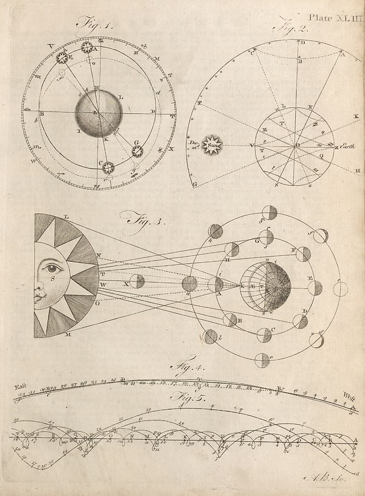

Source · scan and Parse blocks
Layers 1

Parse text by block reading order
- 0PictureNg. 1. V H M M X L B L D H I K C G X N N N
- 1PicturePlate XLIII
Provenance page_id, checksum, Parse model
- page_id
- britannica:309f765b1ecc83e0a7f7762e44b4a927a7555443:train:2243
- sha256
- 0bd9a3e052398fa30c19e0b42ee28f70418b570cc1039ea2a454411dedb4972d
- Parse
- nvidia/nemotron-3.5-parse · finish stop